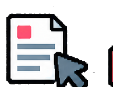
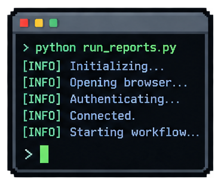
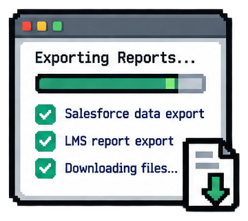
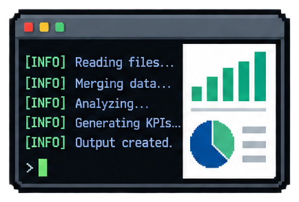
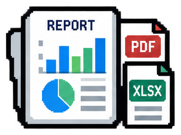

Audience, need, timing, source, and next owner.
Learning Operations + Workflow Design
Workflows that keep learning work moving.
I build the operating rhythm behind learning, from intake, content reviews, and stakeholder decisions to LMS handoffs, reporting, and ongoing maintenance. The result is less friction for teams, clearer information for decision-makers, and workflows people can confidently run and improve.
Cross-functional DeliverySystem HandoffsReporting + AnalysisHuman-in-the-loop AutomationMaintainable Operations
Different Sides of Workflow Experience
Work moves through people, decisions, files, and systems.
The tool matters, but so does the path a request takes. I look for the owner, the source of truth, the review point, the handoff, and the record someone will need later.
Tasks, dependencies, decisions, and status.
SME feedback, approval, and change ownership.
Files, learner access, launch, and support.
Exports, exceptions, and review-ready outputs.
Patterns become guidance, updates, or a better rule.
A workflow succeeds when someone can tell what happened, what is waiting, and who can move it forward. This operating layer connects learning design, quality review, and LMS delivery.
How L&D Shapes My Approach
Design the work around the learning, then make the operation repeatable.
Learning projects cross source owners, reviewers, content tools, learning platforms, and reporting. I use workflow design to keep those dependencies clear through launch and later updates.
People+Process+Tools+Communication+Reporting→ Reliable work
Name the owner, status, blocker, and next decision so work does not disappear between meetings.
Keep source files, review decisions, and version context recoverable for the next person.
Use the lightest structure that serves the team, then adjust it when priorities or platforms change.
What real work taught me
Recurring support questions→Recognize the pattern→Write reusable guidance→Refine from new cases
Support templates, source guides, migration crosswalks, and review records grew from problems that needed more than another one-off message. I also explore new authoring and AI features against real tasks, then document a useful pattern only after checking its sources, outputs, and review needs.
Microsoft 365 Ecosystem
Communication becomes useful when the decision and file stay connected.
I have used Outlook support templates and Microsoft 365 documentation to make recurring work easier to find and hand off. The simulation shows a portfolio-safe collaboration pattern across the suite; it does not represent a production integration I built.
Hands-on: support templates + documentation · simulated: cross-tool handoffUseful forRequests, meetings, shared files, reviews, schedules, and reporting. Watch forDecisions trapped in chat, competing file versions, and unclear ownership. Choose it whenThe work already lives in a Microsoft 365 collaboration environment.
From request to a reviewed source of truth
Outlook or Teams is useful for the conversation. A shared document carries the durable answer. Review status and final output should stay visible to the people who need them.
COLLABORATION WORKSPACE
OUTLOOK REQUESTA learner access question arrives.Owner: support team
New request
The request becomes visible work with an owner.
Asana Workflow Ecosystem
Track the change, the person, and the decision.
In learning production, I used Asana with Review 360 to keep feedback tied to change ownership, status, and follow-through. The deeper intake-and-rules example below is a labeled platform-informed simulation of how the same principles can scale.
ASANA · REVIEW COORDINATION
NEW / SOURCE

Review comment needs a change.Source: Review 360ASSIGNED
Owner: designerCreate a tracked change task.Status: in progress
The comment becomes assigned work rather than a loose note.
Other Enterprise Work Tools
Choose the system around the job that needs to move.
The useful combination changes with the problem: support guidance, learner and account records, or reporting data. Select a work pattern to see a distinct simulated handoff.
Support + knowledge
Turn recurring issues into guidance people can reuse.
An LMS support question becomes a checked response template, a reference note, or an escalation path instead of being redrafted each time.
PracticeKeep send-ready messages distinct from internal reference notes.
BoundaryConfirm the current access path before reusing a template.
Explore LMS Administration →SUPPORT DESK · FICTIONAL
OUTLOOKAccess request arrivesNeeds triage
Identify the issue type before selecting guidance.
Proof Through Automation
Reporting works when the route and the exceptions stay visible.
I built repeatable browser and spreadsheet steps for certification reporting. A separate Salesforce-to-LMS workflow used verified account context for placement preparation. Both show the same operating principle: automate stable work and hold uncertain records for review.
01 · CERTIFICATION REPORTINGCompleted workflow

Run→
LMS exports→
Analyze→
Review packageFour recurring reports become Complete and Incomplete review worksheets, with missing and ambiguous data kept visible.
Explore the reporting case →